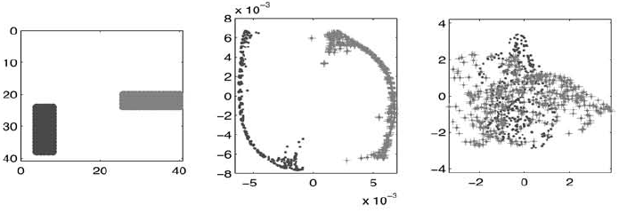
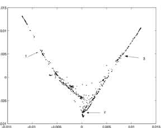

Built 2026-05-15
Belkin and Niyogi’s Laplacian Eigenmaps paper gives one of the clean
early recipes for turning local neighborhood relations into
low-dimensional spectral coordinates. Given high-dimensional
observations thought to lie near a lower dimensional manifold, the
method builds a weighted graph, penalizes coordinate variation across
strong edges, and takes the first nonconstant generalized Laplacian
eigenvectors as the embedding. For the conductance and kernel Laplacian
review, the paper matters because it makes heat-kernel graph weights,
graph Dirichlet energy, and Laplace-Beltrami geometry part of the same
argument. For SIMODS and gflow, it is best read as support
for planned heat/RBF graph-affinity comparators, and as general
distance-locality context for other conductance baselines, not as a
description of the current overlap-density smoother.
Belkin and Niyogi (2001) is a compact founding text for spectral manifold learning. Its central move is simple: replace an unknown smooth manifold by a weighted graph on the observed samples, then use low-frequency graph Laplacian eigenvectors as coordinates. The resulting embedding is local in the sense that large edge weights make it expensive for adjacent vertices to separate in the new coordinate system. This is the same intuition that later graph signal processing, semi-supervised learning, diffusion maps, and many graph-based regularizers made more explicit.
The paper is especially useful for a conductance/kernel Laplacian synthesis because its edge weights are not incidental implementation details. Section 1 offers heat-kernel weights as a main option, Section 2 derives the graph Dirichlet energy minimized by the eigenvectors, and Section 2.2 connects the weight formula back to the heat kernel of a manifold. The authors call these quantities weights or affinities, not physical conductances. Still, once the graph Laplacian is written as \(L=D-W\), the review-layer translation \(c_{ij}=W_{ij}\) is natural: a strong edge conductance is exactly an edge across which the embedding should vary little.
The paper assumes observations \(x_1,\ldots,x_k\in\mathbb{R}^\ell\) that are ambient high-dimensional but have lower intrinsic dimension. The motivating example is a family of images of a fixed object under camera motion: the pixel vectors live in a large Euclidean space, while the true degrees of freedom are those of the camera. The authors do not try to estimate the manifold explicitly. Instead, they use local Euclidean neighborhoods in the observed space as evidence about nearby points on the hidden manifold.
A few background terms carry much of the argument. A graph Laplacian is the matrix \(L=D-W\), where \(W\) is a symmetric nonnegative weight matrix and \(D\) is the diagonal degree matrix with \(D_{ii}=\sum_j W_{ij}\). Its quadratic form is a discrete smoothness penalty: a function on the vertices has small energy when strongly connected vertices receive similar values. The Laplace-Beltrami operator is the manifold analogue of the usual Laplacian from calculus. Its low eigenfunctions are smooth functions on the manifold, and its heat kernel describes how heat starting at one point spreads to nearby points over a short time. A generalized eigenproblem such as \[Ly=\lambda D y\] uses \(D\) as the inner-product measure; here that means eigenvectors are orthogonal and normalized with respect to graph degree mass rather than plain unweighted vertex count.
The algorithm has three steps. First, build an undirected graph on the data. Belkin and Niyogi give two choices: an \(\epsilon\)-neighborhood graph, where vertices \(i\) and \(j\) are connected when \(\|x_i-x_j\|^2<\epsilon\), and a symmetrized \(n\)-nearest-neighbor graph, where an edge is present if either point is among the other’s \(n\) nearest neighbors. The paper notes the usual tradeoff. The \(\epsilon\)-graph has a direct geometric interpretation but may split into several components and requires choosing a distance threshold. The nearest-neighbor graph is often easier to keep connected, but its geometric meaning is less direct.
Second, put weights on the edges. The algorithmic heat-kernel option in Section 1 is \[W_{ij}=\exp\!\left(-\frac{\|x_i-x_j\|^2}{t}\right) \quad\text{when } i\sim j,\] with \(W_{ij}=0\) off the constructed graph. The paper also permits the binary choice \(W_{ij}=1\) on each edge. Binary weights make the graph topology do all the work; heat weights keep a graded notion of distance among already-near points.
Third, solve the sparse generalized eigenproblem \[Ly=\lambda D y,\qquad L=D-W.\] For a connected graph, the constant vector is the unique zero-eigenvalue solution. It is discarded because it maps every sample to the same coordinate. The embedding into \(\mathbb{R}^m\) assigns \[x_i\longmapsto (y_1(i),\ldots,y_m(i)),\] where \(y_1,\ldots,y_m\) are the first \(m\) nonconstant eigenvectors. If the graph is disconnected, the paper instructs the reader to apply the eigenmap step separately on connected components.
The variational core of the paper is the graph Dirichlet energy \[\frac{1}{2}\sum_{i,j}(y_i-y_j)^2 W_{ij}=y^\top L y.\] This identity is the most reusable mathematical object in the paper. It says that the weight matrix is not merely an affinity matrix for visualization; it defines the energy landscape whose minimizers become coordinates. Large \(W_{ij}\) means a large penalty for separating \(i\) and \(j\). In conductance language, it is the same behavior as a strong electrical connection.
The constraints matter as much as the objective. Without a scale constraint, the minimizer is \(y=0\). The paper uses \(y^\top D y=1\), which treats degree as the natural vertex measure. Without an orthogonality constraint, the minimizer is the constant zero mode. The additional condition \(y^\top D\mathbf{1}=0\) therefore selects the first nontrivial smooth coordinate. For an \(m\)-dimensional embedding, writing \(Y=[y_1,\ldots,y_m]\), the same factor convention gives \[\frac{1}{2}\sum_{i,j}\|Y_i-Y_j\|^2 W_{ij} = \operatorname{tr}(Y^\top L Y), \qquad Y^\top D Y=I.\] The source paper prints the vector-valued objective informally without dwelling on the factor of two; the minimizer is unchanged, but the identity above is the exact convention consistent with its scalar equation.
The heat-kernel discussion uses a second bandwidth convention that should be kept distinct from the Section 1 algorithmic formula. In Section 2.2, the local short-time heat kernel on an \(n\)-dimensional manifold is approximated by \[H_t(x,y)\approx (4\pi t)^{-n/2} \exp\!\left(-\frac{\|x-y\|^2}{4t}\right)\] for nearby \(x,y\) and small \(t\). The corresponding truncated edge formula is printed as \[W_{ij}= \begin{cases} \exp\!\left(-\dfrac{\|x_i-x_j\|^2}{4t}\right), & \|x_i-x_j\|<\epsilon,\\ 0, & \text{otherwise.} \end{cases}\] Mathematically, the difference between \(t\) and \(4t\) can be absorbed by renaming the bandwidth. As a review of this paper, however, the two printed forms should not be silently merged: Section 1 states the algorithm with \(\exp(-\|x_i-x_j\|^2/t)\), while Section 2.2 motivates heat weights through the classical Gaussian heat kernel with denominator \(4t\).
The examples are persuasive as demonstrations, not as benchmarks. Figure 1 compares Laplacian Eigenmaps with PCA on 1000 binary \(40\times 40\) images containing either a vertical or horizontal bar. The eigenmap gives a much more structured two-dimensional picture of the two bar families than the first two principal components. The important lesson is not that PCA is universally inferior, but that a local graph can preserve the nonlinear organization of a data family that a global linear projection blurs.

The Brown-corpus example represents each of the 300 most frequent words as a 600-dimensional vector of left- and right-neighbor frequencies. The main plot and its magnified fragments show visually coherent syntactic neighborhoods: infinitive verbs, prepositions, and modal or auxiliary verbs appear in separate local regions. The speech example applies the method to 685 short-time Fourier spectra from a spoken sentence. In the two-dimensional spectral representation, the authors identify two spokes dominated by fricatives and closures, with more periodic sounds such as vowels, nasals, and semivowels nearer the center.

The theoretical evidence is a chain of analogies rather than a modern convergence theorem. On a manifold, minimizing average squared gradient energy leads to eigenfunctions of the Laplace-Beltrami operator. On a graph, minimizing the Dirichlet energy above leads to generalized graph Laplacian eigenvectors. The heat-kernel calculation then explains why a Gaussian distance weight is a geometrically motivated local affinity. The paper states that the graph Laplacian may be viewed as approximating the Laplace-Beltrami operator, but it does not prove finite-sample consistency, density correction, boundary behavior, or parameter stability.
The paper leaves scale selection unresolved. The \(\epsilon\)-graph needs a threshold, the nearest-neighbor graph needs \(n\), and the heat-kernel graph needs a global bandwidth. The binary-weight option removes the heat bandwidth only after the neighborhood graph has already been chosen. None of these choices is made adaptive to local sampling density or local intrinsic scale.
The heat-kernel derivation is local and short-time. It assumes nearby points in local coordinates and small \(t\); it should not be read as evidence that the finite graph Laplacian is density-unbiased or boundary-corrected. Later work developed sharper convergence and normalization theory, but those results are not in this paper. Similarly, the paper’s clustering connection is suggestive: low-energy coordinates tend to expose cluster structure when within-cluster weights are strong and between-cluster weights are weak, but the examples do not report clustering accuracy, runtime, sensitivity analyses, or train/test behavior.
A second transfer risk is vocabulary. Belkin and Niyogi do not define edge lengths, resistances, overlap masses, or physical conductances. Those concepts can be introduced in a SIMODS synthesis, but they are derived translations. The paper itself supports heat-kernel affinities, binary affinities, the unnormalized graph Laplacian \(L=D-W\), and the \(D\)-weighted generalized eigenproblem.
gflowFor SIMODS, this paper is most valuable as a clean template for a heat-kernel conductance comparator. A P02-style comparator would build a neighborhood graph over objects, assign a heat/RBF affinity or a binary edge weight, form \(L=D-W\), and use the resulting Dirichlet energy to smooth, embed, or compare graph functions. In that comparator, interpreting \(W_{ij}\) as a conductance is faithful to the Laplacian energy even though the original authors use the word “weight.”
That should remain separate from current
fit.rdgraph.regression() semantics. The current
precomputed-graph smoother uses supplied edge lengths for neighborhood
ordering or truncation and then constructs an overlap-density /
Riemannian-complex conductance, for example a quantity of the form \(c_e^\rho = 1/\max(\rho_1(e),10^{-10})\).
Belkin and Niyogi do not justify that overlap-density conductance. They
justify a locality-preserving graph Laplacian whose weights are
heat-kernel or binary affinities on a chosen graph.
The useful bridge is conceptual: both approaches regularize functions by local relationships on a graph. P02 explains why a high-affinity edge should penalize large function differences and why low Laplacian modes expose large-scale geometry. It does not decide whether SIMODS should prefer inverse-length, overlap-density, binary, or heat-kernel conductances. It gives the baseline against which those choices can be made explicit.
The most reusable pieces are the three-step graph construction, the
heat-kernel affinity family, the \(L=D-W\) operator, and the exact Dirichlet
energy identity. When writing SIMODS or gflow
documentation, this paper can support a plain explanation of
graph-spectral smoothing: choose local edges, assign larger weights to
stronger local relationships, and penalize variation across those edges.
It can also support a heat/RBF comparator in which \(t\) is treated as a global locality
scale.
The review should not reuse the paper as evidence for adaptive bandwidths, self-tuning kernels, Markov row normalization, density-unbiased graph Laplacians, or the present overlap-density conductance. Those are later or project-specific ideas. P02’s role is narrower and stronger: it anchors the classical heat-weighted Laplacian Eigenmaps baseline and the graph Dirichlet-energy interpretation of weighted edges.
Primary source: local canonical PDF, , read in full including Figures 1–5. Archival scaffolding: the local Markdown memo and audit . Figure paths and figure-page provenance were checked against ; included screenshots are internal-review captures from the canonical PDF.